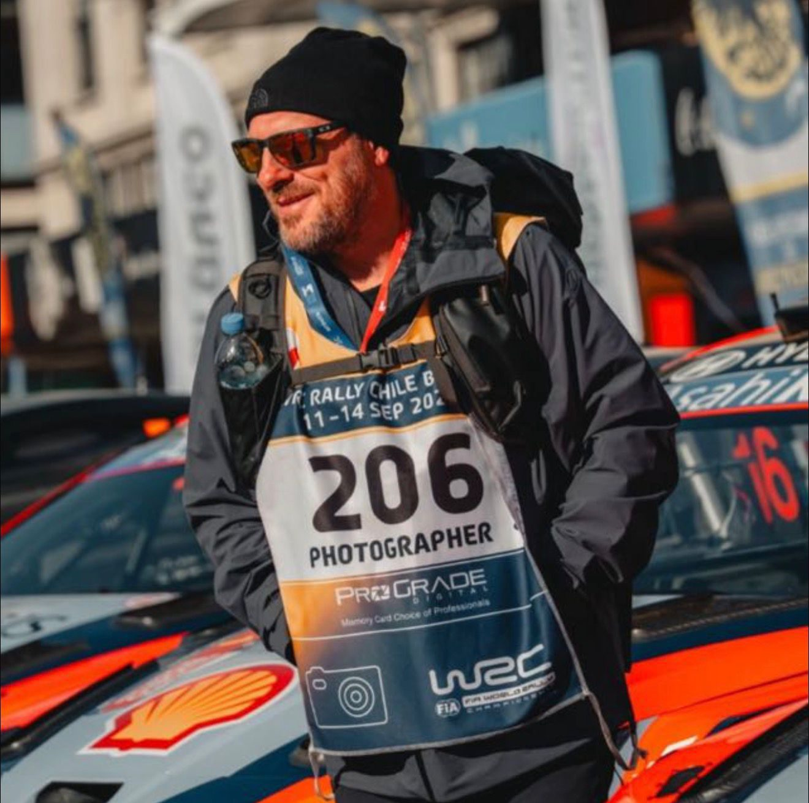

Lucas Martinez
La velocidad dura un instante.
Activá la música y mirá despacio.
- Usá el botón de Spotify y dejá que la playlist marque el clima mientras recorrés las fotos -
←
→
1 / 0

✕
←
→
Home
Gallery
About
Spotify